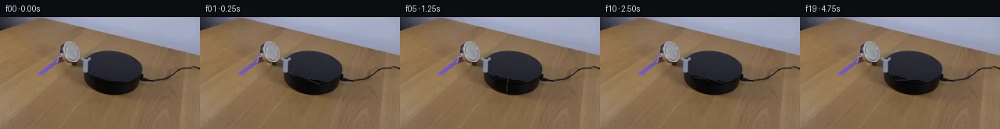

![首帧]()

Round 00
2026-11-05T22:22:35.515069+00:00像素候选变化代码 +182/−0inspection 更新
pixels 46fde090d13abe24 · code a73ff765e436ceb8
查看本轮 generate.py 真实 diff
--- previous/generate.py
+++ current/generate.py
@@ -0,0 +1,182 @@
+#!/usr/bin/env python3
+"""generate.py — PixelWorld-Text: 20-frame animation of wrench rotating clockwise on black platform."""
+
+import numpy as np
+from PIL import Image
+from scipy import ndimage
+from pathlib import Path
+import sys
+
+# Add workspace to path for artifact_io
+WORKSPACE = Path(__file__).parent
+sys.path.insert(0, str(WORKSPACE))
+from artifact_io import save
+
+# ── 1. Load first frame ──────────────────────────────────────────────
+base = np.array(Image.open(WORKSPACE / 'first_frame.png')).astype(np.uint8)
+H, W = 144, 256
+assert base.shape == (H, W, 3), f"Expected (144,256,3), got {base.shape}"
+
+lum = (0.299 * base[:,:,0].astype(float) +
+ 0.587 * base[:,:,1].astype(float) +
+ 0.114 * base[:,:,2].astype(float))
+
+# ── 2. Segment the scene ─────────────────────────────────────────────
+# Platform: very dark region
+platform_mask = lum < 16 # very dark pixels
+
+# Wrench: metallic pixels on the upper portion of the platform
+# These are significantly lighter than the platform background
+wrench_mask = np.zeros((H, W), dtype=bool)
+
+# The wrench sits on the platform, near the magnet (left side)
+# It's composed of metallic gray pixels brighter than the platform
+for y in range(68, 85):
+ for x in range(110, 176):
+ r, g, b = int(base[y,x,0]), int(base[y,x,1]), int(base[y,x,2])
+ l = lum[y,x]
+ # Wrench pixels: gray/metallic, medium brightness, on/near dark platform
+ if abs(r-g) < 15 and abs(g-b) < 15 and 25 < l < 50:
+ # Check neighborhood for platform pixels
+ y0, y1 = max(0, y-2), min(H, y+3)
+ x0, x1 = max(0, x-2), min(W, x+3)
+ nb_dark = (lum[y0:y1, x0:x1] < 16).sum()
+ if nb_dark >= 3:
+ wrench_mask[y, x] = True
+
+# Clean up wrench mask: keep only the largest connected component near the left side
+labeled, n_comp = ndimage.label(wrench_mask)
+best_comp = None
+best_size = 0
+for i in range(1, n_comp + 1):
+ ys, xs = np.where(labeled == i)
+ size = len(ys)
+ cx = xs.mean()
+ # Prefer components on the left portion of platform (near magnet), not too small
+ if 110 <= cx <= 160 and size >= 10:
+ if size > best_size:
+ best_size = size
+ best_comp = i
+
+if best_comp is not None:
+ wrench_mask = labeled == best_comp
+else:
+ # Fallback: use all wrench pixels
+ pass
+
+# Compute wrench properties
+wrench_pixels_y, wrench_pixels_x = np.where(wrench_mask)
+wrench_center_y = wrench_pixels_y.mean()
+wrench_center_x = wrench_pixels_x.mean()
+print(f"Wrench: {wrench_mask.sum()} pixels, center=({wrench_center_x:.1f}, {wrench_center_y:.1f})")
+
+# Save wrench RGB values for restoration
+wrench_rgb = base[wrench_mask].copy()
+
+# ── 3. Generate platform background (for inpainting) ─────────────────
+# We need a clean platform to fill behind the rotating wrench
+# Use the platform pixels from first frame as the base, but inpaint the wrench area
+
+platform_bg = base.copy()
+# For the wrench area, fill with platform-like dark color
+# Use median of dark platform pixels nearby
+dark_platform_pixels = base[platform_mask]
+platform_median = np.median(dark_platform_pixels, axis=0).astype(np.uint8)
+
+# Create inpainted background: fill wrench area with local platform interpolation
+bg_filled = base.copy()
… diff truncated; 95 more lines …